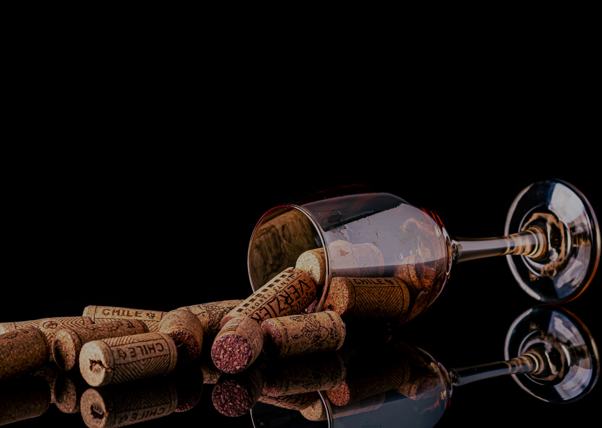

Вино робить все можливим...
Забронювати столик


Винний бар BelMondo
Унікальний проект, який був створений із задумом жити та працювати завдяки захопленим відгукам та яскравим враженням своїх гостей від смаку, гастрономічних поєднань, якості та атмосфери, що досить успішно у нас виходить уже протягом кількох років.
Відвідавши один раз Винний бар BelMondo, Ви зрозумієте, що це не просто заклад, в якому Ви можете випити вина. Це нова культура споживання вин і страв до них. Тут раді всім — і тим, хто на око визначає рік врожаю, і тим, хто з винних премудростей збагнув лише те, що «біле — до риби».